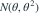
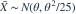

独立样本来自  ，样本量 25，观测样本均值为 10。用枢轴量 和
，样本量 25，观测样本均值为 10。用枢轴量 和  反演，得到的 95% 置信区间约为哪项？
反演，得到的 95% 置信区间约为哪项？

，，样本量 25，观测样本均值为 10。用枢轴量 和 反演，得到的 95% 置信区间约为哪项？- A(7.184, 16.447)
- B(6.080, 13.920)
- C(8.040, 11.960)
- D(7.184, 13.920)
我已思考，展开答案与解析
正确答案：A
- 由于

，枢轴量 服从标准正态。 - 接受区间为 ，等价于 。
- 本次观测均值为正，且两个界限都为正，反演得到 ，约为 (7.184,16.447)。
易错提醒不能把未知标准差 θ 直接替换为均值后套用对称区间；反演后区间一般不对称。
南审 813 · 2026 · 二·3(2)，PDF第2页
从大题拆分考点并重新编写选项；数值或设问有调整。
查看参考来源